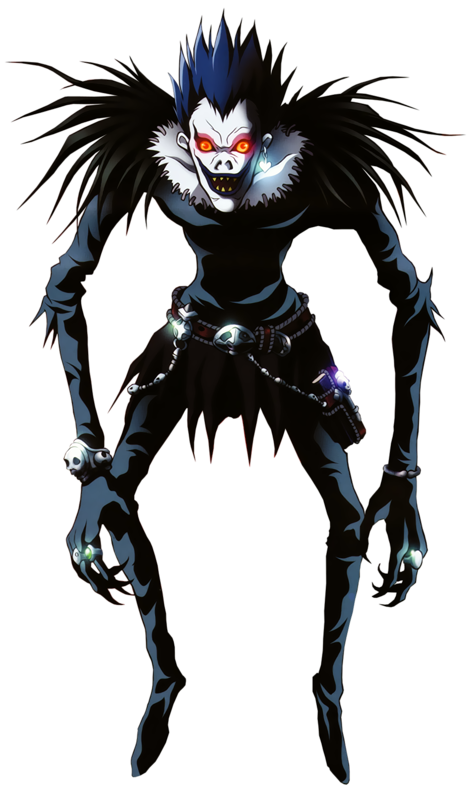
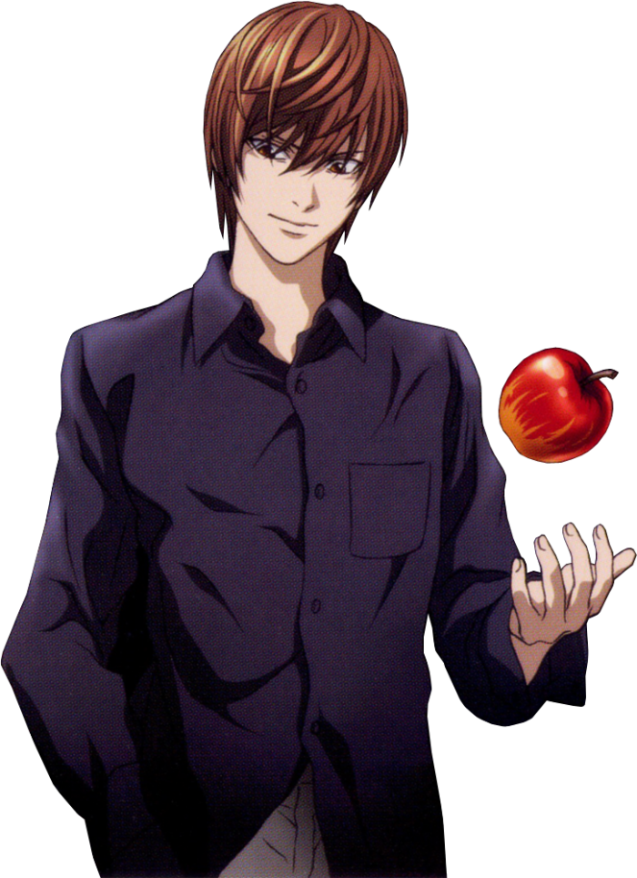

Ryuk
#001

Descrição
Um shinigami que ficou entediado no mundo dos ceifeiros, com isso ele resolveu jogar o seu Death Note no mundo dos humanos, quando Light Yagami o encontra e isso faz com que ele o acompanhe na sua jornada para se tornar o suposto "Deus".
Light Yagami
#002

Descrição
Seu anseio em mudar o mundo, trouxe um disturbio de justiça divina, transformando ele em um serial killer, onde os seus ideais eram o verdadeiro senso de justiça.
L
#003
Descrição
O maior detetive de todos os tempos, foi para o japão para tentar desvendar o caso Kira.